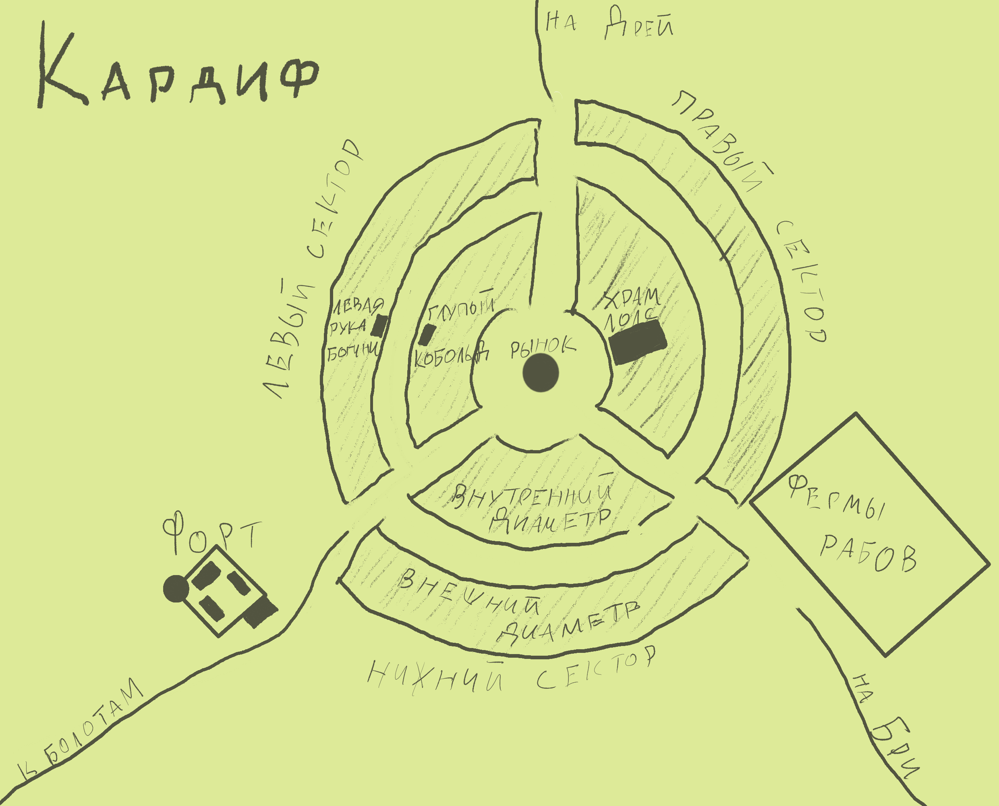

/ Main page / geography / kingdom-of-vrano / cardiff

Кардиф — небольшой городок, административно подчинённый правительству Бри. С населением в 3 тысячи человек он мог бы считаться скорее крупной деревней, если бы не его хозяйственное значение.
Дело в том, что Кардиф — это один из главных центров разведения рабов. Значительную часть города занимают кобольдовые и людоящеровые фермы, где этих созданий заставляют размножаться для получения постоянного источника свежей рабочей силы. Затем они продаются большими партиями и отправляются караванами куда необходимо — в шахты, в военные лагеря, на фермы...
Архитектурно город представляет собой два вложенных друг в друга кольца двухэтажных каменных зданий, многие из которых огорожены оградой, стоящих на широких мощёных улицах с фонарями, по ночам горящими приятным мягким фиолетовым светом.
Из трёх тысяч населения города дроу и ассимилированные ими люди делятся примерно поровну, как и в большинстве других городов королевства Врано. Но кроме свободного населения в Кардифе живут тысячи рабов. Сколько их здесь точно, наверняка знают разве что владельцы ферм по их разведению, но их здесь наверняка не меньше, чем дроу и людей, вместе взятых.
Рынок Кардифа, расположенный в центре города, очень похож на другие рынки народа дроу — это большое круглое здание с идущими по периметру крытыми торговыми галереями, где каждая лавка находится в отдельном помещении с выходом на улицу. Внутренний двор, расположенный под открытым небом, окружён колоннадой, а в его центре находится сцена для так любымых дроу аукционов. Вопреки стереотипам, продают на них не столько и не сколько рабов, а множество других вещей — от артефактов до недвижимости.
Хоть сам город и не имеет укреплений, покой жителей охраняет стоящий на холме со стороны болот каменный форт с постоянным гарнизоном из солдат-дроу и рабов-людоящеров. Здешний гарнизон — один из самых крупных во всём королевстве, что связно с необходимостью защищать город как от угроз с болот, так и от возможных восттаний рабов из самых больших во Врано ферм.
Это целый комплекс зданий со своими стенами, расположенный слегка на отшибе. Мало кто знает, что там внутри, так как особо никто не стремится туда попасть. Если кому-то необходимо купить большую партию рабов — то представительство ферм есть на рынке.
Кроме перечисленного, в городе есть храм Лолс — внушительное здание с острыми шпилями и окнами с фиолетовой мозаикой-паутинкой в готическом стиле, таверна "Глупый кобольд", примечательная тем, что роль прислуги тут исполняют девушки-кобольды, наряженные как горничные, и расположенный напротив бордель "Левая рука богини", настолько хороший, что его посещение строго рекомендуется всем гостям города.